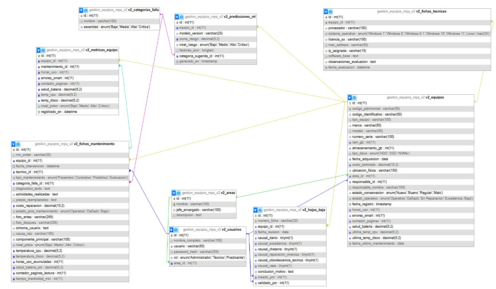

Sistema de gestión de equipos y mantenimiento predictivo
| Versión del documento | 1.1 |
|---|---|
| Fecha | 18 de agosto de 2026 |
| Descripción | Actualización que incorpora cambios recientes en API, frontend, migraciones y ML (ver resumen de cambios). |
| Responsable | Equipo de desarrollo |
Nota: esta lista se generó a partir de los archivos modificados en el repositorio. Para más detalles técnicos consulte cada ruta indicada en el apartado Documentos fuente del repositorio.
Este documento presenta de forma unificada la descripción funcional, arquitectura, instalación, configuración, operación, seguridad, pruebas y despliegue de Sigemad MPA V2. Está dirigido a administradores, personal técnico, usuarios operativos y desarrolladores responsables de mantener o ampliar la solución.
Sigemad MPA V2 es una aplicación web para gestionar el inventario patrimonial de equipos de cómputo, sus fichas técnicas y el historial de intervenciones de mantenimiento. La plataforma incorpora un componente opcional de aprendizaje automático que estima el riesgo operativo y apoya la priorización del mantenimiento.
Centralizar y mantener trazable la información del parque tecnológico, facilitando el registro, consulta, evaluación, mantenimiento y generación de reportes de los equipos.
| Perfil | Uso principal del documento |
|---|---|
| Administrador | Configuración organizacional, usuarios, seguridad y supervisión. |
| Técnico | Inventario, fichas técnicas y registro de mantenimientos. |
| Practicante | Consulta y registro básico del inventario, según permisos. |
| Desarrollador / soporte | Instalación, API, base de datos, pruebas y mantenimiento. |
El proyecto aplica la propuesta Prompt-Centered SDLC v1.2, en validación: se usa este software para comprobar si un ciclo de vida centrado en prompts puede sustituir a Scrum cuando la IA comprime los tiempos de implementación. No se aplican ceremonias ni sprints; las entregas se documentan como incrementos. La metodología puede tener lagunas; el detalle, las fuentes y las limitaciones están en documents/metodologia.md y en documents/desarrollo_softwareIA/.
| Módulo | Capacidades principales |
|---|---|
| Autenticación | Inicio y cierre de sesión, protección de rutas y autorización mediante JWT. |
| Dashboard | Indicadores, distribución por estado, tipo y área; fallas frecuentes; mantenimientos recientes y alertas predictivas. |
| Inventario | Registro, consulta, edición, filtros, tipos personalizados, carga masiva desde Excel y exportación de ficha. |
| Ficha técnica | Búsqueda por código patrimonial, datos generales, hardware/software, evaluación, observaciones y PDF. |
| Mantenimiento | Historial cronológico, intervenciones, telemetría, diagnóstico, reparación, evidencias y reportes PDF. |
| Configuración | Administración de áreas, responsables y personal. |
| ML predictivo | Riesgo individual y por lotes, alertas, sugerencia de categoría y reentrenamiento. |
La interfaz React consume una API REST desarrollada en PHP. El backend centraliza autenticación, reglas de negocio, acceso a MySQL y generación de documentos. Para las funciones predictivas, PHP actúa como proxy autenticado hacia FastAPI, evitando exponer directamente el servicio Python al navegador.
| Capa | Tecnología | Responsabilidad |
|---|---|---|
| Frontend | React 19, React Router, Axios, Bootstrap, Tailwind/PostCSS, jsPDF | Interfaz SPA, navegación, formularios y consumo de API. |
| Backend | PHP, PDO, Firebase JWT, Dompdf, OpenSpout | API, autenticación, persistencia, reportes e importación Excel. |
| Datos | MySQL | Inventario, usuarios, áreas, mantenimientos, métricas y predicciones. |
| ML | Python, FastAPI, Scikit-learn | Entrenamiento e inferencia de riesgo. |
| Calidad | Vitest, PHPUnit, pytest, ESLint | Pruebas unitarias y análisis del frontend. |
gestion_mpa/ ├── src/ Frontend React organizado por funcionalidades ├── backend/api/v2/ API: config, controladores, modelos, rutas y middleware ├── backend/sql/ Estructura y migraciones de base de datos ├── backend/tools/ Utilidades de migración y verificación ├── ml/ Microservicio, scripts, datos, modelos y pruebas ├── documents/ Documentación por fases SDLC (requisitos, diseño, implementación, pruebas, mantenimiento) ├── prompts/ Repositorio de prompts Prompt-Centered SDLC v1.2 └── gestion_equipos_mpa_v2.sql Exportación integral de la base de datos
Bearer en las solicitudes posteriores.| Componente | Versión recomendada | Observación |
|---|---|---|
| Apache + MySQL + PHP | PHP 8.1 o superior | Puede utilizarse XAMPP/LAMPP en desarrollo. |
| Node.js | 18 o superior | Necesario para desarrollo y compilación del frontend. |
| Composer | Compatible con PHP 8.1+ | Instala dependencias del backend. |
| Python | 3.10 o superior | Solo si se habilita ML. |
| Navegador | Versión moderna | Chrome, Edge o Firefox con JavaScript habilitado. |
En PHP deben estar habilitadas, como mínimo, las extensiones pdo_mysql, curl, mbstring y json.
backend/sql/v2_estructura.sql.v2_extension_fase7.sql y v2_ml_predicciones.sql.cd backend composer install
npm install npm run dev
La dirección de desarrollo predeterminada es http://localhost:5173. La API local se publica normalmente en http://localhost/gestion_mpa/backend/api/v2.
cd ml pip install -r requirements.txt python -m uvicorn app.main:app --host 127.0.0.1 --port 8000
GET http://127.0.0.1:8000/health responde correctamente.Las variables de compilación más importantes son:
| Variable | Finalidad | Ejemplo |
|---|---|---|
VITE_API_BASE_URL | Ruta pública de la API. | /backend/api/v2 |
VITE_BASE_PATH | Ruta base de la aplicación. | / o /gestion_mpa/ |
La configuración local parte de backend/api/v2/config/local.example.php. La copia local debe definir conexión MySQL, secreto JWT, orígenes CORS y URL del servicio ML. El archivo real de configuración no debe publicarse ni versionarse.
| Variable | Valor predeterminado |
|---|---|
DB_HOST | localhost |
DB_USER | root |
DB_PASSWORD | Vacío en desarrollo |
DB_NAME | gestion_equipos_mpa_v2 |
Presenta el total de equipos, mantenimientos, áreas y equipos dañados; gráficos por estado, tipo y área; categorías de falla; alertas predictivas y mantenimientos recientes.
El módulo muestra una línea de tiempo con intervenciones recientes y permite consultar un equipo mediante su código patrimonial.
| Tipo de equipo | Datos específicos de mantenimiento |
|---|---|
| Laptop / CPU | Polvo, temperaturas, horas de uso, batería e inactividad. |
| Impresora | Contador de páginas. |
| Monitor / Otro | Datos generales, diagnóstico y actividades. |
Disponible para el administrador. La pestaña Áreas permite registrar unidades, jefes y descripciones. La pestaña Personal permite crear usuarios, asignar rol y relacionarlos con un área.
| Operación | Administrador | Técnico | Practicante |
|---|---|---|---|
| Dashboard | Sí | Sí | Sí |
| Ver y registrar inventario | Sí | Sí | Sí |
| Editar inventario | Sí | Sí | No |
| Ficha técnica | Sí | Sí | No |
| Mantenimiento | Sí | Sí | No |
| Configuración | Sí | No | No |
| Carga masiva Excel | Sí | No | No |
Ruta base local habitual: /gestion_mpa/backend/api/v2. Salvo autenticación, los recursos requieren token JWT.
| Recurso | Finalidad |
|---|---|
/auth | Inicio de sesión y emisión del token. |
/equipos | Consulta, alta, edición, filtros e importación del inventario. |
/mantenimientos | Registro y consulta de intervenciones e historiales. |
/fichas-tecnicas | Evaluación y detalle técnico de equipos. |
/dashboard | Métricas, distribuciones y consultas consolidadas. |
/reportes | Fichas e historiales en PDF. |
/areas | Administración de áreas. |
/usuarios | Administración de personal y roles. |
/ml | Proxy hacia inferencia, entrenamiento y métricas ML. |
{
"success": true,
"data": {},
"message": "Operación exitosa"
}
Los consumidores deben interpretar además el código HTTP. Los errores de validación, autorización, recurso inexistente o servidor deben mostrarse sin revelar trazas ni detalles internos.
| Función | Presentación |
|---|---|
| Riesgo por equipo | Badge en inventario y evaluación predictiva de la ficha. |
| Priorización | Top de equipos con mayor riesgo en dashboard. |
| Categoría sugerida | Apoyo en mantenimiento correctivo. |
| Actualización | Recálculo después de registrar mantenimiento y reentrenamiento controlado. |
| Método | Endpoint | Descripción |
|---|---|---|
| GET | /health | Estado y versión del modelo. |
| POST | /predict/riesgo | Predicción individual. |
| POST | /predict/riesgo/batch | Predicción por lote. |
| POST | /predict/categoria | Sugerencia heurística de categoría. |
| POST | /train | Reentrenamiento desde MySQL. |
| GET | /metrics | Métricas del último entrenamiento. |
La base usa tablas con prefijo v2_ y columnas en snake_case. Los principales dominios son usuarios, áreas, equipos, fichas de mantenimiento, métricas por equipo y predicciones ML.
backend/uploads.El siguiente diagrama muestra las tablas principales y sus relaciones clave (FK) en la versión V2 de la base de datos.

npm test npm run lint cd backend && composer test cd ml && pytest -v
Estados sugeridos para resultados: OK, FALLA, BLOQUEADO y N/A. El plan detallado se encuentra en documents/04_testing/plan_pruebas_funcionales.md.
cd backend composer install --no-dev --optimize-autoloader cd .. npm install npm run build
{DocumentRoot}/
├── index.html y assets/ Contenido compilado de dist/
└── backend/
├── vendor/
└── api/v2/
dist/ y el backend con sus dependencias.| Síntoma | Causa probable | Acción recomendada |
|---|---|---|
| Error 500 de API | Conexión o configuración MySQL incorrecta. | Verificar configuración local, permisos, extensiones PHP y registro del servidor. |
| Login falla o aparece CORS | Origen no autorizado o URL de API incorrecta. | Revisar cors_origins, protocolo, dominio y VITE_API_BASE_URL. |
| 404 al recargar una ruta | Reglas de reescritura SPA ausentes. | Comprobar .htaccess, mod_rewrite y ruta base. |
| PDF no descarga | Token ausente, permisos o dependencia incompleta. | Revisar sesión, respuesta de API y la instalación de Dompdf. |
| Sin alertas ML | FastAPI detenido o URL incorrecta. | Consultar /health y revisar ml_service_url. El resto del sistema puede continuar. |
| Importación Excel rechazada | Plantilla alterada o datos inválidos. | Usar la plantilla oficial y corregir las filas señaladas. |
| Ruta | Contenido |
|---|---|
README.md | Guía principal de instalación y uso. |
documents/metodologia.md | Prompt-Centered SDLC v1.2. |
prompts/ | Prompts por fase del ciclo de vida. |
documents/02_diseno/architecture.md | Arquitectura V2. |
documents/05_mantenimiento/produccion.md | Despliegue detallado. |
documents/04_testing/ | Planes y evidencias de pruebas. |
documents/03_implementacion/incrementos/ | Incrementos de implementación. |
documents/05_mantenimiento/changelog.md | Historial de versiones. |
ml/README.md | Pipeline y servicio predictivo. |
| Término | Definición |
|---|---|
| Prompt-Centered SDLC | Ciclo de vida de software centrado en prompts versionados por fase (requisitos, diseño, implementación, pruebas, mantenimiento). |
| Incremento | Entrega acumulativa de la fase de implementación; no equivale a un sprint Scrum. |
| API REST | Interfaz HTTP utilizada para comunicar frontend y servicios. |
| JWT | Token firmado que representa una sesión autenticada. |
| ML | Aprendizaje automático aplicado a la estimación de riesgo. |
| SPA | Aplicación web de página única gestionada en el navegador. |
| Telemetría | Lecturas operativas como temperatura, horas, batería o páginas. |
| Mantenimiento preventivo | Intervención programada para reducir la probabilidad de falla. |
| Mantenimiento predictivo | Intervención priorizada con base en condición, telemetría o estimación de riesgo. |
| Código patrimonial | Identificador institucional de 12 dígitos asociado a un equipo. |